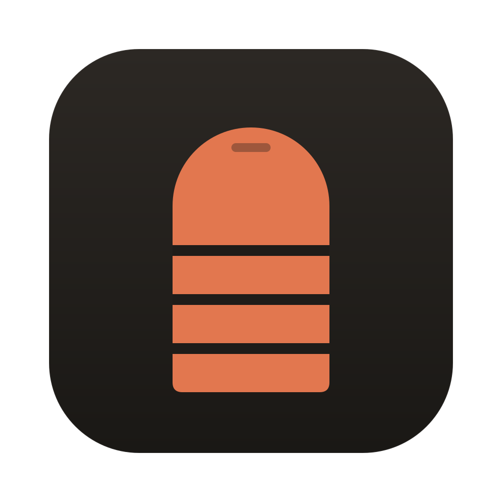
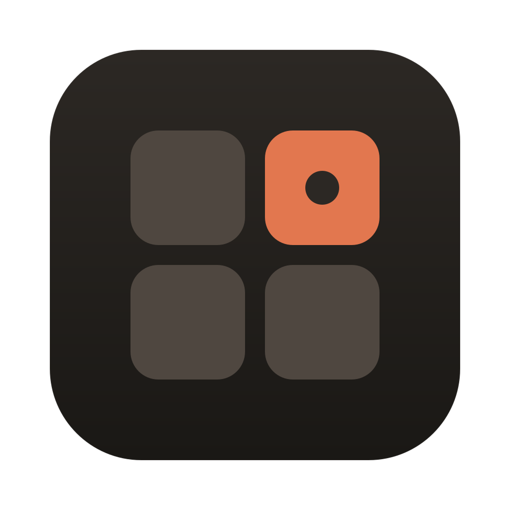

El logo actual: tres silos de distinta altura.

Un silo de granja; cada franja, un perfil guardado.
Perfiles apilados; el de adelante, con su franja de color.

Cuatro casillas separadas; una activa.
Una S partida en dos mitades que no se tocan.